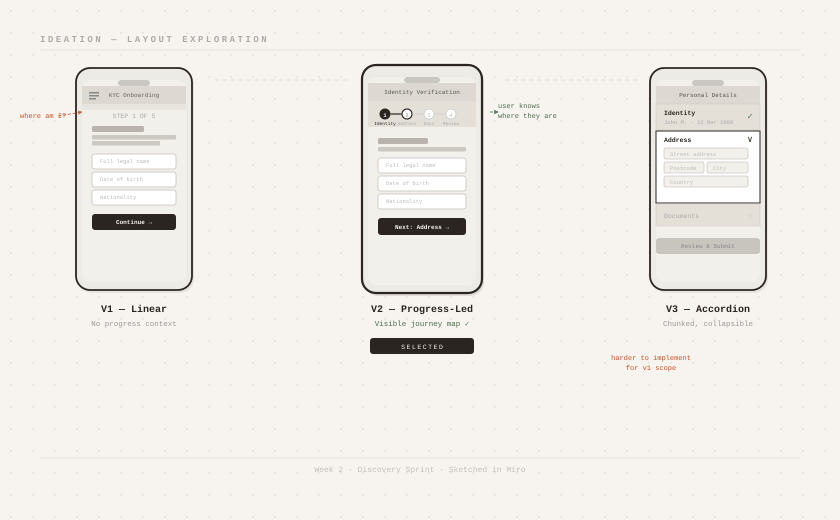
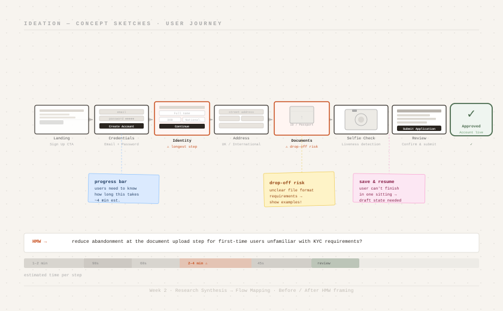

Compliance UX · Regtech
Customer
Onboarding
Flow

The Brief
A regtech startup had built a customer onboarding platform used by KYC/AML compliance teams at financial institutions. The platform handled the full onboarding submission pipeline — document intake, risk scoring, analyst review, and approval or rejection.
The product worked. But the experience of using it daily was exhausting analysts. Error rates were rising. Review throughput was falling. And the compliance managers knew an audit was coming.
I was brought in to redesign the core review interface — the part analysts spend 6–8 hours inside every day.
Problem signals
01 · Discovery
Before touching Figma, I needed to understand the actual work — what decisions analysts make, in what order, with what information, and where they fail. Desk research on KYC regulation was table stakes. The real insight came from sitting next to analysts while they worked.
02 · Synthesis
The research produced 60+ observations. After affinity mapping and two rounds of synthesis, these five insights kept surfacing — and each one had direct design consequences.
"After 50 cases you stop seeing the customer. You start seeing a pattern. The UI was making that worse."— KYC Analyst, observed during shadowing session
03 · Define
Once I had the insights, I needed design opportunities — not solutions. These HMW statements became the filter every design decision was tested against throughout the project.
04 · Ideation
I ran two ideation sprints. The first generated 30+ concepts, some of which were technically interesting but behaviourally naive — they assumed analysts would change habits they'd spent years building.
The second sprint was more constrained: every concept had to work within 3 clicks of the existing mental model. The breakthrough ideas came from that constraint.
I tested lo-fi prototypes with 4 analysts in 45-minute sessions. The sessions were as much about watching hesitation and confusion as they were about collecting verbal feedback.


04b · Design Flow
The new workflow reduced the number of decision points per case from 7 to 4, without removing any compliance-required checks. Fewer steps, same regulatory rigour.
05 · Design Decisions
Every design has a hundred small decisions. These four had the most argument, the most testing, and the most impact.
06 · The Design
The redesigned platform shipped in phases — the triage view and split-pane layout first, followed by the context sidebar and decision annotation in the second release.


07 · Outcomes
The audit passed. The compliance manager called it "the first time we felt confident walking into an audit instead of nervous."
08 · Reflection